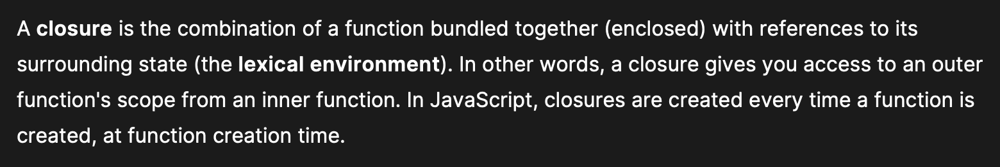

Why all the unclear examples?
When it comes to computer science, a lot of people like to teach concepts by using unnecessarily complicated examples (i.e. trying to teach recursion by using the Fibonacci sequence). Sometimes this verbose way of explaining things can leave beginners even more confused. Closures are one of those topics that a lot of people tend to obfuscate, when in reality they're quite simple to understand.
Looking at the MDN Web Docs, a closure is defined as this:
...I don't know about you, but this sounds too technical, especially if you have no prior understanding of how scope works, which brings us to the main point.
In order to understand closures, you must first know how scoping works; after that, closures become easy to understood. I have a whole article dedicated explaining scope, which can be found here.
So what are closures?
Take a look at this function:
const outerFunction = () => {
let age = 23;
console.log(`Outer function age: ${age}`);
const innerFunction = () => {
console.log(`Inner function age: ${age}`);
};
innerFunction();
};
outerFunction();
// Outer function age: 23
// Inner function age: 23
...in this example, we have a simple function that contains another function inside. The outer function holds the
variable age and also invokes the inner function.
If you know how scope works, then you know innerFunction has access to its outer
scope, which is why it has access to age.
A closure is when you define a function inside another function, and the inner function can access anything declared inside the outer function. That's it. Why are they useful? Because the inner function has access and preserves the outer function's values, even if the outer function has already executed. To show an example of that, let's modify the code a little:
const outerFunction = () => {
let age = 23;
console.log(`Outer function age: ${age}`);
const innerFunction = () => {
console.log(`Inner function age: ${(age += 2)}`);
};
return innerFunction;
};
const result = outerFunction();
// Outer function age: 23
...this time, instead invoking innerFunction, it's just being returned, so you
only get outerFunction printed to the console.
result holds the innerFunction, which can be
proved by logging it...
console.log(result);
/*
() => {
console.log(`Inner function age: ${(age += 2)}`);
};
*/
...so calling it should invoke innerFunction...
result();
// Inner function age: 25
...even though outerFunction was already called and closed,
innerFunction still has access to its scope. Furthermore, calling
result again will further increment age...
result();
result();
// Inner function age: 25
// Inner function age: 27
...and that's all there is to it.
Remember, a closure is where you define a function inside another function, and the inner function can access anything declared inside the outer function. The important part is knowing that the inner function has access and preserves the outer function's values, even after the outer function has closed.